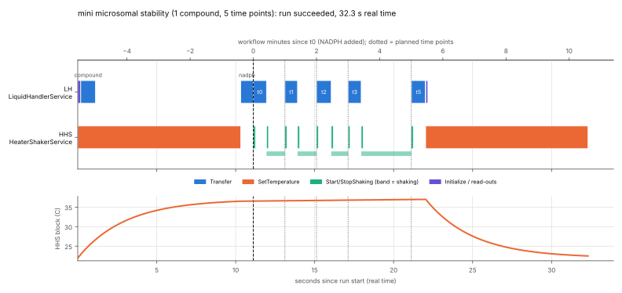
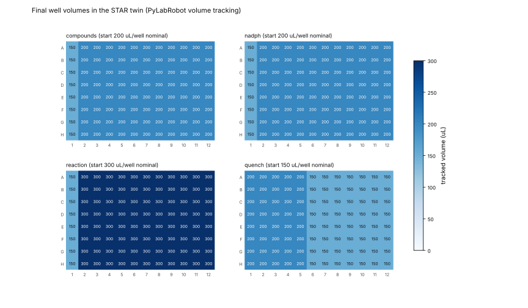

A Hamilton STAR digital twin, driven through SiLA 2
A small scheduler runs a time-compressed microsomal-stability assay through two SiLA 2 servers: one wraps a Hamilton STAR digital twin built on PyLabRobot's firmware-level simulator, the other a heater-shaker twin. It runs end to end on Linux with open-source tools and no hardware.
Code, results and this page live in the repository's SiLA2/ folder. The companion deep dive on the SiLA 2 driver landscape is docs/sila2-drivers-deep-dive.md.
How it fits together
SiLA 2 is the vendor-neutral lab-device standard: each instrument runs a server that publishes features (typed commands and properties written as XML), and any client, such as a scheduler or LIMS, calls them over gRPC. Here both "instruments" are digital twins, so the SiLA servers are virtual drivers.
flowchart LR W["workflow.yaml
mini microsomal stability"] --> S["Scheduler
one lane per device,
dependencies, timed steps"] S -- "SiLA 2 / gRPC :50052" --> L["lh_twin server
LiquidHandlerService"] S -- "SiLA 2 / gRPC :50053" --> H["hhs_twin server
HeaterShakerService"] L --> P["PyLabRobot v1 STAR
simulation=True"] P --> F["Firmware-level simulator
real command strings,
resource and volume model"] H --> T["Thermal model
first order, 10x time"] S --> R["results/
timeline, trace, volumes, charts"]
| Piece | What it does | Built from |
|---|---|---|
| Feature definitions | The contract: LiquidHandlerService (Initialize, PickUpTips, Aspirate, Dispense, DropTips, an observable Transfer, GetWellVolumes, GetFirmwareTrace, a Status stream) and HeaterShakerService (an observable SetTemperature, Start/StopShaking, a temperature stream) | SiLA Feature Definition Language, generated by features/make_fdl.py |
| STAR twin server | Turns each SiLA call into PyLabRobot calls on a simulated STAR, records every firmware string, maps failures to defined SiLA errors | sila2 0.14.0 codegen + PyLabRobot @ 7779f50 |
| Heater-shaker twin server | Heats 22 → 37 °C on a first-order curve (τ = 30 s simulated, 10× faster than real), streams the temperature, shakes | sila2 0.14.0 codegen + 150 lines of Python |
| Scheduler | Reads the workflow, runs each device's steps in its own lane, waits for dependencies and time points, streams intermediate responses, stops on the first failure, watchdog on every call | Python standard library + sila2 dynamic client |
The workflow: a microsomal stability assay, sped up 30×
Compound goes into liver microsomes at 37 °C; NADPH starts the reaction (t0); at 0, 1, 2, 3 and 5 minutes an aliquot is pipetted into cold acetonitrile to stop it. One workflow minute is 2 real seconds. The LC-MS readout that would give CLint is outside this POC.

# scheduler/workflow.yaml (excerpt) - id: add_nadph device: lh command: Transfer params: {SourcePlate: nadph, SourceColumn: 1, TargetPlate: reaction, TargetColumn: 1, VolumeUl: 50.0} depends_on: [add_compound, heat_to_37] marks_t0: true # t0 = when this step ends - id: sample_t1 device: lh command: Transfer params: {SourcePlate: reaction, SourceColumn: 1, TargetPlate: quench, TargetColumn: 2, VolumeUl: 50.0} depends_on: [stop_t1] start_after_t0_s: 60 # 1 workflow minute after t0
Inside the twin
The STAR twin is PyLabRobot's STAR(simulation=True): a firmware-level simulator configured from a recorded real instrument (8 × 1000 µL channels, 96-head, iSWAP, autoload). It builds the same firmware strings the real driver would send over USB and answers reads from PyLabRobot's resource and volume model, so the twin knows what is in every well.

What a SiLA call becomes
An observable Transfer streams four steps while PyLabRobot sends firmware commands such as this aspirate (C0AS, 8 channels, positions in 0.1 mm):
C0ASat0 0 0 0 0 0 0 0tm1 1 1 1 1 1 1 1 xp02526 02526 02526 02526 02526 … yp1455 1365 1275 1185 1095 1005 0915 0825 th2450te2450lp2302 2302 2302 …
The SiLA adapter
The server method is thin: it reports progress and intermediate responses, and the PyLabRobot work happens in twin.py.
instance.begin_execution()
def report_step(n, total, text):
instance.progress = (n - 1) / total
instance.send_intermediate_response(
Transfer_IntermediateResponses(
Step=f"{n}/{total} {text}"))
message = twin.transfer(..., on_step=report_step)
The firmware trace is captured by wrapping the simulator's _log_exchange hook on one driver instance, so PyLabRobot itself is unmodified. PyLabRobot is async and the SiLA server is threaded, so the twin owns one asyncio loop in a background thread and serialises operations with a lock.
Run it yourself
Linux or macOS (Windows via WSL). About five minutes, most of it the first install.
-
Install the tools
You need git and uv, which also fetches Python 3.12.
curl -LsSf https://astral.sh/uv/install.sh | sh
-
Get the code
Clone the repository and switch to the POC folder.
git clone https://github.com/bum94587/LabAutoNews.git cd LabAutoNews git checkout claude/youthful-hamilton-s7n7dx # or main, once merged cd SiLA2 -
Install dependencies
Installs
sila20.14.0, PyLabRobot pinned to commit7779f50, matplotlib, PyYAML and the two server packages.uv sync
-
Run the demo
Starts both SiLA servers, runs the workflow, writes
results/and stops the servers. Expect "run SUCCEEDED: 27/27 steps" after about 35 seconds.uv run python run_demo.py uv run python run_demo.py --time-scale 4 # slower: 1 workflow minute = 4 s -
Check the tests
uv run python tests/test_hhs_twin.py uv run python tests/test_lh_twin.py uv run python tests/test_smoke.py
-
Drive the twin by hand
Start the STAR twin in one terminal, then talk to it from Python in another.
--insecureskips TLS, which is fine on localhost and not allowed in production.# terminal 1 uv run python -m lh_twin --port 50052 --insecure --disable-discovery # terminal 2: uv run python from sila2.client import SilaClient lh = SilaClient("127.0.0.1", 50052, insecure=True).LiquidHandlerService print(lh.Initialize().Summary) run = lh.Transfer(SourcePlate="compounds", SourceColumn=1, TargetPlate="reaction", TargetColumn=1, VolumeUl=50.0) for step in run.subscribe_to_intermediate_responses(): print(step.Step) # 1/4 pick up tips ... 4/4 drop tips print(lh.GetWellVolumes(Plate="reaction").VolumesJson[:80])
-
Change the workflow
Edit
scheduler/workflow.yaml, for example add a 10-minute time point (start_after_t0_s: 600, quench column 6), and run the demo again. The scheduler rejects workflows that cannot finish, such as dependency cycles. -
Look at the results
results/run_summary.md(steps, timings, firmware statistics, volumes),gantt.svg,plate_volumes.svg,firmware_trace.jsonandtimeline.json. Any generic SiLA 2 client, such as UniteLabs' SiLA Browser, can also connect to a running twin.
SiLA 2 and liquid handlers today
SiLA 2 standardises the plumbing (discovery, transport, observable commands, errors, locking, simulation), but its feature library has no standard liquid-handling feature, so every liquid-handler server defines its own commands. The official Python SDK used here was marked unmaintained on 17 Sep 2026; new work should start on UniteLabs' unitelabs-sila or unitelabs-cdk.
| Liquid handler | SiLA 2 interface | Source |
|---|---|---|
| Tecan Fluent | Open-source FluentControl connector since 2020 (start methods, simulation mode, worklist pipetting) | Vendor |
| Dispendix I.DOT | Native server on the instrument | Vendor |
| Hamilton STAR / VANTAGE | No public Hamilton interface; UniteLabs says it sells connectors (not public) | Third party, unverified |
| Opentrons OT-2 / Flex | Community connectors with a full Flex simulator | Community |
| Beckman Biomek | None found ("SILAS" is not SiLA) | None |
| Labcyte Echo 5xx | Community Python server, in use as of Aug 2025 | Community |
Details and sources, checked by an independent verifier agent: SiLA 2 drivers deep dive.
From POC to a real lab
The same architecture can carry a real STAR, because the twin and the real instrument share PyLabRobot's API. A staged path, with each stage usable on its own:
1. Twin behind SiLA 2
Virtual drivers, scheduler, firmware trace, tests and reviewer sign-off (this folder).
2. Harden the SiLA layer
- Move from the unmaintained
sila2tounitelabs-sila/unitelabs-cdk. - TLS certificates instead of
--insecure; add the standardLockController,SimulationController(switch twin ↔ real) andCancelController. - Units and range constraints in the feature definitions; structured types instead of JSON strings.
3. Real STAR, simulation first
- Swap
STAR(simulation=True)forSTAR()over USB in the same server; keep the twin as a dry-run target. - Teach and verify labware positions, validate liquid classes (acetonitrile quench needs its own).
- Require explicit per-run human approval before moving hardware, the rule PyLabRobot sets for AI agents.
4. Peripherals and readout
- Real heater-shaker (PyLabRobot drives several), plate sealer and centrifuge.
- LC-MS/MS hand-off of the quench plate and CLint calculation from the recorded sample times.
- Connect commercial schedulers through a custom driver: none of the major ones documents native SiLA 2 support.
5. Closing the loop
- Adaptive time points or repeat runs chosen by a model, called through SiLA with an allow-list and a human confirmation step.
- Keep the twin as the rehearsal stage for every new plan.
Limits and review
- The simulator models positions, firmware and volumes, not liquid physics. It does not refuse an over-aspirate itself, so the twin checks volumes and tip room and raises a defined SiLA error.
- Each sample is quenched about 0.4 workflow minutes after its nominal time, because a transfer takes about 0.8 s. A real method would start early by that amount.
- Nothing puts the devices in a safe state on failure; the run just stops scheduling.
- Unencrypted SiLA on localhost; the Python SDK used is unmaintained; PyLabRobot's v1 STAR driver is new (its registry entry is still the v0 driver).
An independent reviewer agent checked the plan and every builder's code while it was written. It found four blockers in the plan and one in the code (all fixed before the final run) and five should-fix items, all applied: a status/t0 race, call timeouts, two servers silently sharing a port, leaked log handles and an unsafe shutdown. Full findings: REVIEW.md.
Sources
- PyLabRobot at commit 7779f50: github.com/PyLabRobot/pylabrobot
- SiLA 2 Python SDK (
sila20.14.0): gitlab.com/SiLA2/sila_python; SiLA base, schema and feature library: gitlab.com/SiLA2/sila_base - UniteLabs SiLA libraries: unitelabs-sila, unitelabs-cdk
- This POC: SiLA2/ (plan, code, results, review)